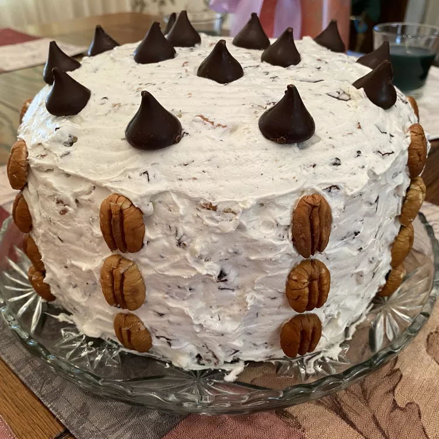

Chocolate Cake Recipe
Chocolate Candy Bar Cake

Easy, fast and tasty
A delicious chocolate candy bar cake for every family gathering, check out this completely original
and not-at-all-taken-from-another-site recipe!
Ingredients
For the cake:
- 1 (15.25 ounce) package devil's food cake mix
- 1 ½ cups milk
- ¾ cup vegetable oil
- 3 large eggs
- 1 (3.5 ounce) package instant vanilla pudding mix
For the frosting:
- 1 (8 ounce) package cream cheese
- 1 cup confectioners' sugar
- ½ cup white sugar
- 1 (12 ounce) container frozen whipped topping, thawed
- 1 cup chopped pecans
- 4 (1.5 ounce) bars milk chocolate candy, coarsely chopped
Steps
- Preheat the oven to 325 degrees F (165 degrees C). Grease and flour three 8-inch pans.
- To make the cake: Combine cake mix, milk, oil, eggs, and instant vanilla pudding mix in a large bowl;
beat with an electric mixer on low speed until blended. Scrape down the sides of the bowl; continue
to beat for 4 minutes on medium speed. Pour batter into prepared pans.
- Bake in the preheated oven until a toothpick inserted into the center comes out clean, about 20 to 25 minutes.
Cool on a wire rack for 5 minutes. Run a table knife around the edges to loosen; invert cakes
carefully onto a cooling rack and let cool for about 30 minutes.
- To make the frosting: Beat cream cheese, confectioners' sugar, and white sugar in a large bowl until smooth.
Fold in whipped topping, pecans, and chopped chocolate. Spread frosting onto the cooled cake layers.
Stack layers; frost top and sides.